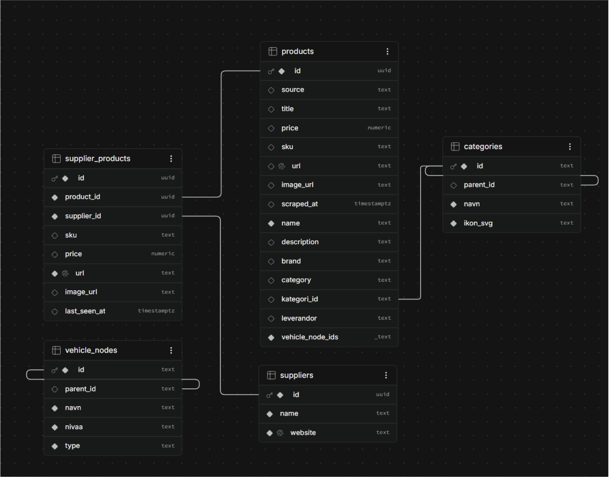
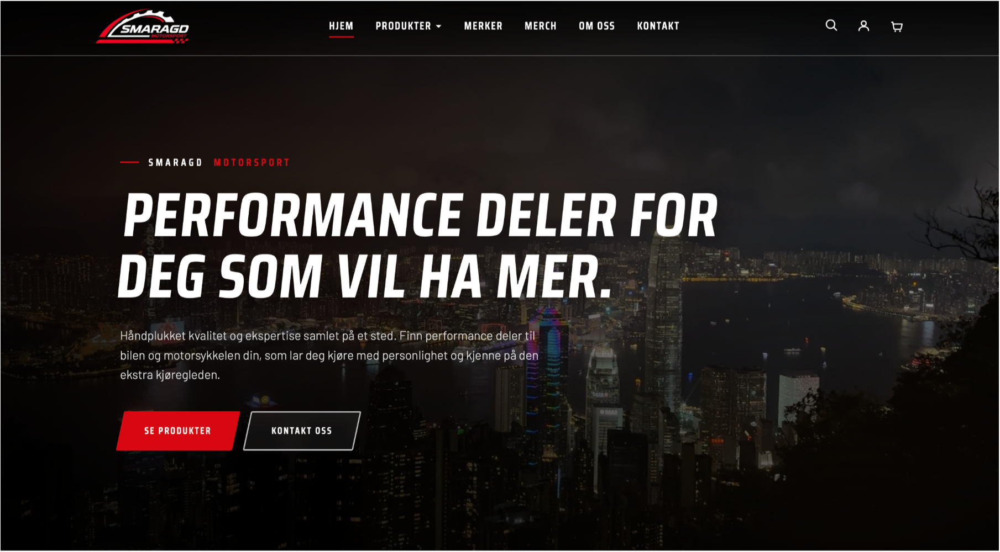
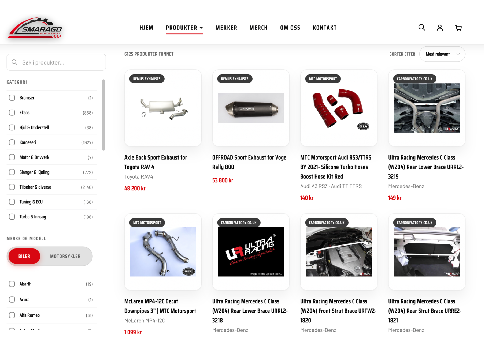
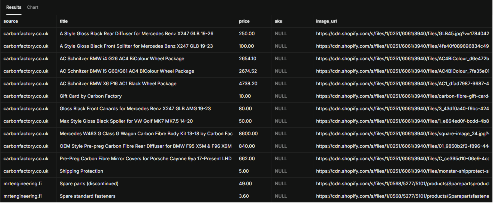

Statusrapport 2
Fra planlegging til fungerende nettbutikk. Produktdata, frontend og kasse begynner å falle på plass, og nå er målet å få nettsiden ut til Smaragd Motorsport.
Sist oppdatert: 15.10.2026
Kort oppsummert
- Produktdata fra fem leverandører er importert til Supabase, og beskrivelsene for over 5000 produkter er oversatt til norsk.
- Frontend er bygget opp med de viktigste sidene: Forside, Produktkatalog, Om oss, Kontakt, handlekurv, og kasse.
- Handlekurv, kasse og backend for betaling er laget. Stripe-koblingen gjenstår, og Smaragd Motorsport må opprette en Stripe-konto.
- Nettsiden skal hostes på Render, og målet er å publisere en første versjon så snart som mulig.
Prosjektstatus
Siden statusrapport 1 har vi gått fra planlegging til aktiv utvikling av nettbutikken til Smaragd Motorsport. Vi har blant annet jobbet med å importere og organisere produktdata i Supabase, utvikle frontend, sette opp brukerkontoer med e-postbekreftelse og bygge backend for kasse og betaling. I tillegg har vi startet forberedelsene til hosting. De viktigste delene av løsningen er nå under utvikling, men det gjenstår fortsatt arbeid med å ferdigstille funksjonene og få dem til å fungere sammen.
Gjennom prosjektet har vi holdt kontakten med Smaragd Motorsport for å avklare behov og forventninger. Bedriften ønsker at nettbutikken skal publiseres på deres eget domene så snart som mulig. Det viktigste er at nettsiden blir tilgjengelig, selv om enkelte funksjoner fortsatt mangler eller trenger forbedringer. Vi legger derfor størst vekt på å få de mest sentrale funksjonene på plass først, med mulighet for å rette feil og videreutvikle løsningen etter publisering.
Arbeidsoppgaver og ansvarsfordeling
Vi har fordelt hovedansvaret mellom gruppemedlemmene for å sikre fremdrift på de ulike delene av prosjektet. Dennis jobber med frontend, Noa med administrasjonssystemet, Marius med backend og ordrebehandling, Mohamed med pris og valuta, og Efe med produktdata og leverandørintegrasjoner. Mohamed har i tillegg jobbet med e-postverifisering og forberedelser til hosting.
Selv om alle har sine egne ansvarsområder, samarbeider vi når oppgavene overlapper. Noa har blant annet hjulpet Marius med å oversette produktbeskrivelser, mens Noa og Mohamed har samarbeidet om håndteringen av brukerkontoer. En mer detaljert oversikt over arbeidet til hvert gruppemedlem finnes i prosjektdagboken.
Produktdata og database
Supabase brukes til å lagre produktinformasjonen som nettbutikken bygger på. Marius har hentet produktdata fra fem nettbutikker og lagt dem inn i databasen. Fire av leverandørene bruker Shopify, der produktinformasjonen hentes fra JSON-filer. For Remus hentes dataene direkte fra nettsiden ved hjelp av HTML. Hvert produkt har en unik lenke som brukes for å unngå at det samme produktet blir lagret flere ganger. Efe har samtidig jobbet med strukturen på produktdataene, hvordan de skal kobles til databasen, og hvordan manglende eller feilaktige verdier skal håndteres.
Underveis i prosjektet byttet Smaragd Motorsport ut én av leverandørene. Vi måtte derfor fjerne dataene fra den tidligere leverandøren og importere produkter fra den nye. Dette førte til en betydelig økning i datamengden. Siden produktbeskrivelsene var på engelsk, måtte de oversettes til norsk for å passe til språket i nettbutikken. Beskrivelsene for over 5000 produkter er nå oversatt, og produktimporten er tilpasset slik at de norske tekstene blir lagret riktig i databasen.

Frontend og brukergrensesnitt
Dennis har jobbet med grunnstrukturen i nettbutikken. Så langt er det laget sider for forsiden, produktkatalogen, bil- og motorsykkelmerker, Om oss og Kontakt. Vi har også laget handlekurv, kasseside og en side for ordrebekreftelse. Header og footer er utviklet som felles komponenter, slik at de kan brukes på tvers av sidene. Vi har også etablert en felles visuell stil som passer med logoen og profilen til Smaragd Motorsport.
Produktkatalogen inneholder produktkort, kategorifiltrering og mulighet for å velge mellom bil og motorsykkelmerker. Arbeidet med å koble katalogen til Supabase er også i gang. Målet er at produkter, priser, bilder, kategorier og merker skal hentes direkte fra databasen, i stedet for å legges inn manuelt på nettsiden.
I denne fasen prioriterer vi å få på plass de viktigste sidene og funksjonene. Arbeid med universell utforming, brukervennlighet og mindre designdetaljer vil få større oppmerksomhet når hoveddelene av nettbutikken er mer komplette.


Brukerkontoer, kasse og hosting
Noa og Mohamed har arbeidet med registrering og håndtering av brukerkontoer. De har satt opp e-postbekreftelse ved registrering ved hjelp av Resend og ASP.NET Core Identity. I tillegg er arbeidet med å flytte brukerkontoene fra en lokal SQLite-database til Supabase Postgres påbegynt. Dette skal gjøre det mulig for hele gruppen å bruke de samme kontoene, inkludert administratorkontoen.
På backend-siden har Marius utviklet funksjonalitet for kassen. Når en kunde gjennomfører et kjøp, lagres ordren i databasen før den sendes videre til Stripe for kortbetaling. Dersom betalingen godkjennes, blir ordren registrert. Vi vurderte både Stripe og Vipps som betalingsløsninger, men valgte Stripe. Før betalingsløsningen kan tas i bruk, må Smaragd Motorsport opprette en egen Stripe-konto. Dennis har laget frontend-delen av kjøpsflyten, med handlekurv, kasseside og ordrebekreftelse, som skal kobles til denne backend-løsningen.
Vi har også undersøkt mulighetene for gratis hosting og kommet frem til at vi vil bruke Render. Mohamed har startet arbeidet med å klargjøre prosjektet for publisering. Dette innebærer blant annet oppsett med Docker, miljøvariabler og tilkobling til Supabase. Vi jobber fortsatt med å få hele hostingløsningen til å fungere som den skal.
Utfordringer og erfaringer
En av utfordringene vi har møtt, er at produktinformasjonen fra leverandørene ikke alltid er komplett. Noen produkter mangler beskrivelse, merke, kategori eller bilder. Dette påvirker hvordan produktene presenteres i nettbutikken, og gjør det mer krevende å utvikle gode funksjoner for søk og filtrering.
Leverandørbyttet førte til at datamengden økte betydelig. Samtidig viste det seg at oversettelsen av over 5000 produktbeskrivelser ble for krevende å gjennomføre på én enkelt PC. Vi måtte derfor fordele arbeidet på flere maskiner. Vi har også brukt tid på å finne en passende hostingløsning som ikke medfører kostnader, ettersom bedriften ikke hadde bestemt seg for hvordan nettsiden skulle driftes.
Arbeidet har gitt oss en bedre forståelse av hvor viktig det er med god datakvalitet og pålitelige integrasjoner mot leverandørene. Det holder ikke bare å importere mange produkter. Informasjonen må også være korrekt, strukturert og tilpasset hvordan den skal brukes i nettbutikken.

Videre arbeid
Den viktigste prioriteringen fremover er å få nettbutikken publisert. Vi skal ferdigstille oppsettet på Render, koble løsningen til domenet til Smaragd Motorsport og kontrollere at nettsiden fungerer som forventet etter publisering. Betalingsløsningen må også kobles til Stripe, og vi skal teste hele kjøpsprosessen. I dette arbeidet må vi ivareta sikkerheten rundt betaling, nøkler og kundedata. For å komme videre med Stripe må bedriften først opprette en konto.
På frontend-siden skal vi utvikle produktsider som viser blant annet spesifikasjoner, pris og lagerstatus. Vi skal også lage en søkefunksjon som håndterer både norske og engelske søkeord, og koble handlekurven, kassen og ordrebekreftelsen til backend og Stripe. I tillegg ønsker vi tilbakemeldinger fra Smaragd Motorsport på designet, slik at vi kan gjøre nødvendige endringer ut fra bedriftens ønsker og preferanser. Før vi går videre med universell utforming, brukervennlighet og finpuss, vil vi prioritere å få hovedfunksjonene på plass.
Vi skal fortsette å forbedre produktinformasjonen i databasen ved å fylle inn manglende beskrivelser, merker, kategorier og bilder der det er mulig. Samtidig må vi kvalitetssikre dataene og sørge for at importen håndterer duplikater på en god måte. Vi skal også teste innlogging, e-postbekreftelse og administrasjonsfunksjonene mot den nye databasen. Til slutt skal admin-grenen slås sammen med hovedløsningen.
Gjennom resten av prosjektet vil vi fortsette å samarbeide på tvers av ansvarsområdene og hjelpe hverandre der det er behov. Målet er at de ulike delene skal fungere sammen som én helhetlig nettbutikk som dekker behovene til Smaragd Motorsport.